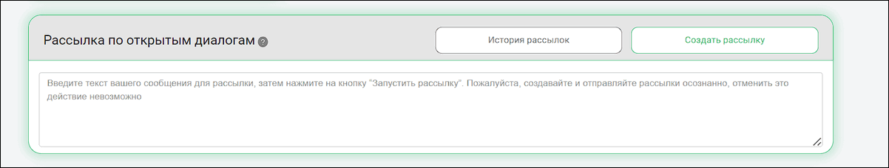
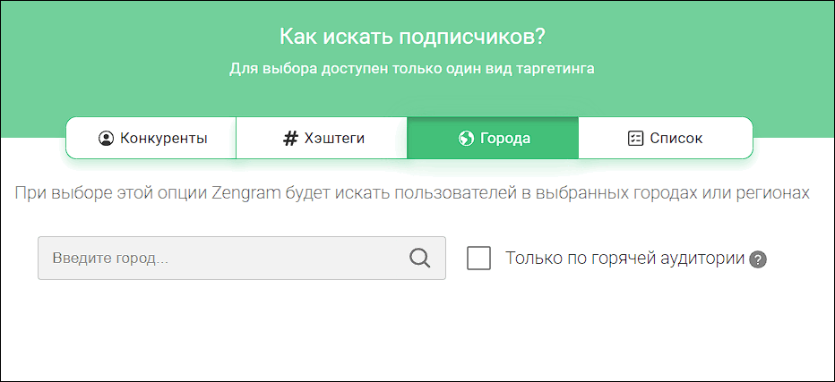
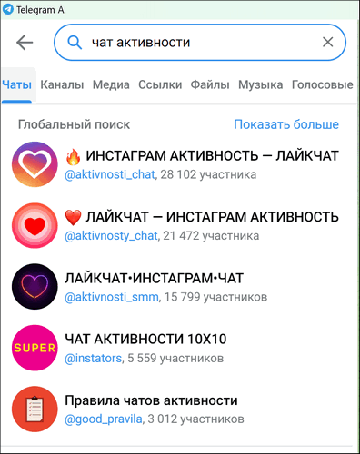
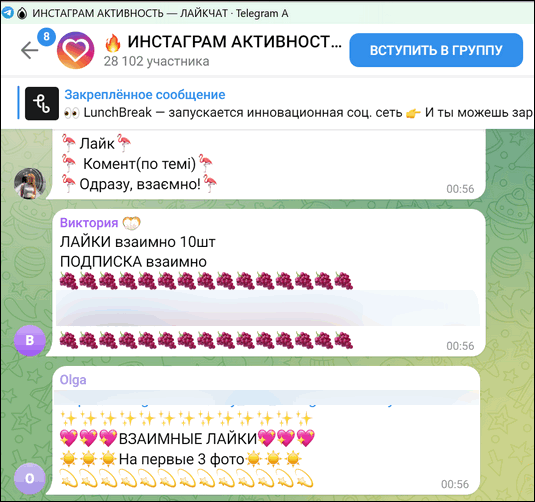
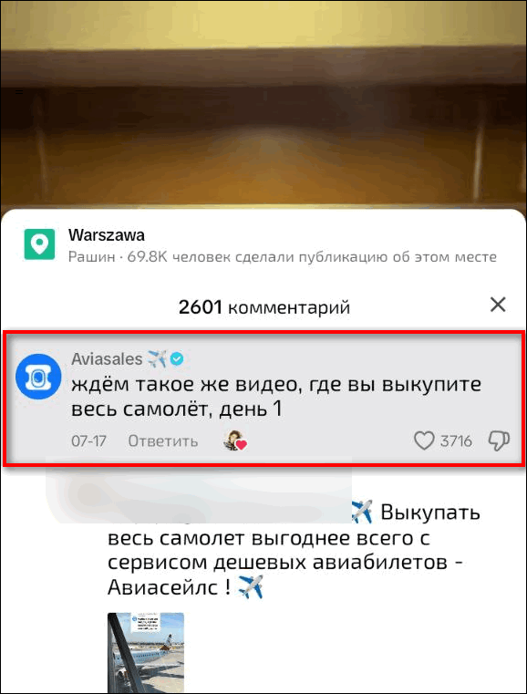

Массфолловинг в Инстаграме: актуальность и результативность

Массфолловинг в Инстаграме* - это массовая подписка на разные страницы, которые совпадают с вашим блогом по интересам, размеру аудитории. Есть несколько вариаций такого способа продвижения: чистый и с подпиской на все доступные аккаунты, которые могут быть взаимны.
Массфолловинг: что это и как работает в Инстаграм*
Способ продвижения основан на том, что пользователь подписывается на 20, 50 и даже 100 аккаунтов за сутки, которые могут быть взаимны в подписке. Принцип такой: владелец будет заинтересован страницей, которая отправила ему приглашения в друзья, поэтому подпишется в ответ. Или заинтересуется конкурентом, который предложил дружбу. То же касается массовой подписки на аккаунты потенциальных подписчиков. Владелец блога массово отсылает приглашения целевой аудитории, в ожидании ответа или что его страницу просмотрят и найдут интересной. Есть несколько вариантов, как организовать такой способ продвижения:
- вручную. Собрать базу потенциальных подписчиков по конкурентам, через поиск найти похожие блоги по тематике;
- через онлайн-сервисы. Например, Zengram или Bridgit;
- писать комментарии у популярных блогеров, привлекая внимание;
- участвовать в чатах активности.
Выбирая более естественные способы, вроде комментариев под публикациями блогеров, пользователь может быть заблокирован. Поэтому как вариант – отправлять отклики, которые касаются самого поста, не прикрепляя личной рекламы с призывом перейти в профиль и подписаться. У продвижения через онлайн-сервисы также есть преимущества. Не нужно искать страницы похожих блогеров и потенциальной аудитории – внутренние инструменты сами генерируют базу и требуют от пользователя только новых параметров фильтрации или одобрения.
Zengram – сервис продвижения
Официальный сайт - Zengram.ru Сервис продвижения Zengram предлагает участникам накрутку реальных пользователей и ботов, проверку страницы на спам и возможность настраивать рассылку.

✅В его функции входит:- создание базы для рассылки. Подбор потенциальной аудитории, которой будут отправлены сообщения;
- накрутка лайков, комментариев и других видов активности;
- авторассылки. Ввести текст нужного сообщения и указать список по которому будет отправлено;
- сбор подписчиков по четырем критериям: конкуренты, хештеги, города или свой перечень.

Владелец блога, сообщества может буквально создать массовую подписку с этими функциями, привлекая фанатов с помощью рассылки. Также в Zengram есть автоматическая подписка на других пользователей и автоотписка, как только те ответили взаимностью. Таким образом, владелец не засоряет свой список подписок и получает новую аудиторию.Чаты для взаимных подписок
Сервисы для массфолловинга наиболее эффективный способ, как привлечь новых читателей. Но есть и другой вариант – чаты активности. Это сообщества, каналы в Телеграме или Вконтакте, где собрались пользователи объединенные одной целью – повысить активность у себя в профиле Инстаграма*. Работает по принципу взаимной подписки и обмену активностями.

То есть: подписавшись на чат, вы увидите сообщения от других пользователей со ссылками на их публикации, страницы. Ниже будет указано, какой вид активности необходим и как быстро отвечает владелец. Вы ставите лайк/пишите комментарий/подписываетесь и в ответ получаете тот же тип активности, но уже на свою публикацию. Вы можете самостоятельно запустить обмен подписками, разместив своё объявление в общем чате.
Такие каналы могут быть открытыми или закрытыми, в зависимости от их уникальности. Допустим, чаты посвященные повышению активности на страницах крупных блогов, обычно закрытые. Потому что именно там блогеры обмениваются советами, опытом и договариваются о проведении совместных мероприятий, создании общих постов.Посты у популярных блогеров
Еще один нестандартный вариант, как получить потенциальную аудиторию – писать комментарии под постами крупных блогеров. Это сработает, если у вас небольшой блог и вы умеете привлекать внимание через отклики.
Интересный пример такого продвижения: страница Aviasales в Тик Токе. Найти интересные и смешные комментарии от официального аккаунта не составит труда: они практически под любым видео с миллионными просмотрами.

Такой способ работает во многих социальных сетях, где открыты комментарии. Но не советую писать длинные сообщения с рассуждениями – короткие и смешные, которые привлекут внимание не только автора публикации, но и его подписчиков. Заинтересованные фанаты обязательно перейдут на страницу и если им понравится ваш контент – подпишутся. Способ с продвижением через комментарии рекомендую использовать в качестве дополнительного.Стоит ли использовать массфолловинг в Инстаграме*
И главный вопрос: работает ли массфолловинг? У такого способа есть преимущества и недостатки, которые нужно учесть прежде, чем пробовать на своей странице. Плюсы:
- новая активная аудитория;
- высокая посещаемость аккаунта;
- потенциальные клиенты, которые пришли по вашей же отобранной базе;
- быстрый результат: всего за пару дней можно собрать до 100 новых фанатов.
Минусы:
- нужно следить за лимитами. Аккаунт могут забанить, если регулярно превышать максимальное число подписок и отписок за сутки;
- большинство пользователей не читают раздел «Запросы» в Директе. Поэтому рассылка по базе может быть неэффективной;
- требует времени и постоянного наблюдения за ростом. Стратегию продвижения придется менять постоянно.
Массфолловинг стоит использовать как еще один метод продвижения, к естественному повышению качества контента, тестированию новых форматов и трендов.